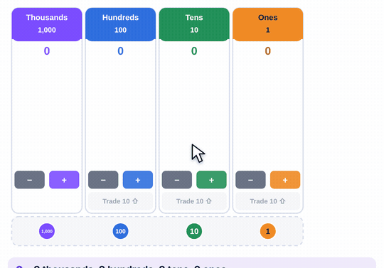
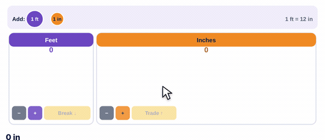

90-second video · captions on screen
What it is
Every disc is the same size. Its value comes from the number printed on it, not from how big it is.
Base-ten blocks let you see that a ten is ten ones. Discs don't. That's the point: students have to think about what each disc is worth. Discs are the step between blocks and the written number.
The one move to teach: trade
The amount never changes. Only the number of discs does. Say it with students every time: "I traded 10 ones for 1 ten. I still have the same amount."
How to use the tool
- Drag a disc from the tray onto its column.
- Ten or more in a column? Drag one up to the bigger column. Ten become one.
- Not enough to take away? Drag a disc to the smaller column. One becomes ten.
- Read the number under the mat.

Try this with your class
352 − 175
- Build 352.
- Take away 5 ones. Only 2 there, so break a ten. Now 12 ones. Take 5, leave 7.
- Take away 7 tens. Only 4 left, so break a hundred. Now 14 tens. Take 7, leave 7.
- Take away 1 hundred. 1 left. The answer is 177.
Have students write each step in the written method next to the discs. They should see the crossed-out digits match the trades they just made.
Watch for
The Trade Mat: same move, new numbers
70-second video · captions on screen
The Trade Mat uses the same idea for measurement, but the trade isn't always 10.
3 ft 4 in − 1 ft 9 in
- Can't take 9 inches from 4. Break 1 foot into 12 inches.
- Now 2 ft 16 in.
- Take away 1 ft 9 in. Left: 1 ft 7 in.

Try it yourself
Based on: NCETM, using counters in place-value columns · Happy Numbers, five ideas with place value disks · the Dimensions Math kit list.